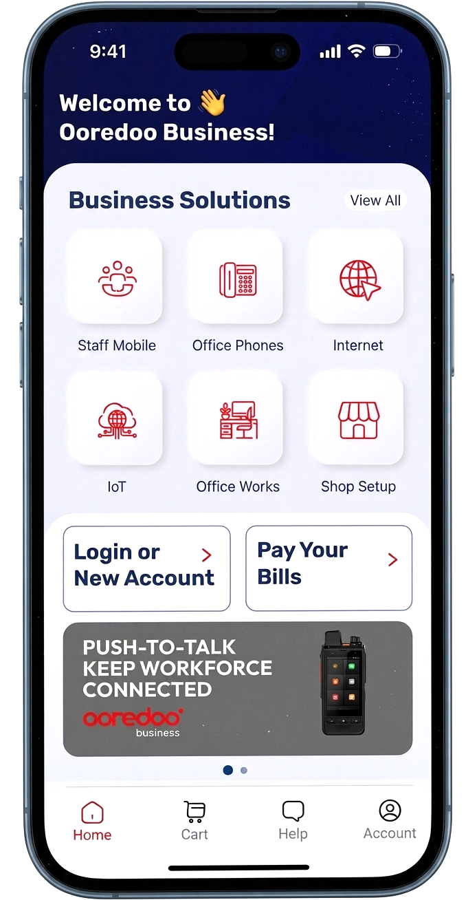

Digital Transformation
Conceived and delivered Ooredoo's first B2B digital self-service platform, cutting order processing time by 35%, reducing cost-to-serve by 50%, and onboarding customers in hours instead of days. The transformation earned Ooredoo the Best Digital Transformation award from the Ministry of Communications and Information Technology in 2025.
Ooredoo is a fast-paced multi-national corporation offering telecom, cloud, and
ICT services in 13 countries with 100m subscribers. Ooredoo Qatar is the head office
and leader of innovation across the group.
Problem: B2B Business Unit under increasing pressure to modernize the SMB experience
into seamless end-to-end digital experience, overcoming constraints and complexities of legacy platforms.
Proposition: Create a flexible digital ecosystem that decouples front-end user journeys
from legacy infrastructure complexities, ensuring frictionless SMB experience.

Strategic Vision & Business Case: Drove cross-functional alignment within executive
stakeholders in Sales, Operations, and IT to define a unified vision, project goals, and Minimum Viable
Product (MVP) scope. Developed and secured executive sign-off on the Business Case, clarifying the
rationale, financial and market positioning benefits, costs, and project risks.
Requirements Elicitation: Facilitated cross-functional workshops to define a complete
set of Epics and a
prioritized User Story backlog in Jira, adhering to INVEST principles. Key Epics spanned the full customer
journey,
including onboarding, ordering, provisioning, billing, and customer care. Employed the MoSCoW prioritization
technique to strategically sequence the MVP backlog based on a rigorous assessment of business value and
technical dependencies.
Stakeholders Management: Managed conflicting stakeholders priorities (operations, sales,
IT) on what the MVP could realistically deliver given the constraints of legacy BSS/OSS stack.Facilitated a
structured trade-off session using a value-vs-effort matrix, ultimately securing agreement to launch with
automated ordering and manual provisioning as a transitional state, getting the platform live on
schedule while a phased integration roadmap was built in parallel.
Benchmarking/Non-Functional Requirements: Worked with UX/UI team
to benchmark "best-in-class" features to define Non-Functional Requirements (NFRs)
for performance, responsiveness, and security, based on industry standards. These findings were
formalized into a Design and Usability Requirements Document that guided the product development process.
UX & Journey Design: Designed low-fidelity wireframing in Figma of all key customer
journeys including product discovery, quote generation, online checkout, contract signing (with OTP), and
self-service
account management. Supervised UX/UI team to translate flows into high-fidelity Figma prototypes
validated through user reviews and customer testing sessions.

Low Fidelity Wireframes
Agile Delivery: Owned the product backlog in Jira and drove sprint planning across
cross-functional teams including developers, QA, UX designers, and integration engineers.
Conducted daily stand-ups, sprint reviews, and retrospectives. Delivered the MVP in 9 months followed by
iterative feature releases.
Ecosystem Integration: The legacy Siebel product catalog contained 3,000+ records
with data and structure unsuitable for digital channels. Created a new data-driven product catalog structure
for digital channels. Coordinated integration with Salesforce CRM, billing, digital identity (SSO),
OPT e-signature, and payment gateway. Defined data contracts, API specifications, and end-to-end test
scenarios
across systems.

Needs-Based Organized SMB Portfolio
Restructuring the SMB Portfolio: The SMB portfolio included 30+ products
organized by technology, leading to market confusion and sales team struggling to position offerings.
Conducted a full portfolio audit combining customer journey analysis, sales conversion, and competitive
benchmarking to identify decision drivers for SMB buyers. Redesigned the go-to-market architecture
around six customer-centric need areas with outcome-led messaging that resonated with business owners
through customer beta testing and evidenced by the rapid adoption post launch.
The new framework was adopted as the standard taxonomy across all marketing, sales, and digital channels,
directly enabling the self-service product discovery experience.
Unified GTM Message: The new product taxonomy and messaging was adopted across the B2B
App, marketing collateral, and all other digital channels, leading to enhanced product discoverability and
conversion rates.
Pre-Launch & Go-to-Market: Managed a controlled beta test with a
pilot group of 50 enterprise customers to gather final usability feedback. Google Analytics was integrated to
monitor traffic and user behavior. Simultaneously, I coordinated the Go-to-Market (GTM) strategy with the
Marketing team, ensuring full readiness across all channels, including App Store optimization, social media
assets, and digital campaigns.


Launch & Results: Delivered the platform on time and within budget. In the
first quarter post-launch, 20% of new SMB activations were completed through the self-service App,
reducing manual touchpoints and errors, and cutting average order processing time by 35%. Cost-to-serve
per order dropped by 50% due to savings on channel partners commissions. Customer onboarding time dropped from
3 days to 8 hours."


The team celebrating successful launch
In 2025, Ooredoo received the Best Digital Transformatio award from the Ministry of
Communications
and Information Technology in recognition of the achivement and the impact on leading digital
transformaiton in the State.

35%+
Reduction in Order Processing Time
8 hours
Customer Onboarding Time vs. 3 days
50%
Reduction in Cost-to-Serve per Digital Order
9 Mo
MVP Delivery Timeline